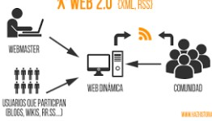
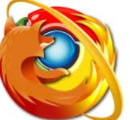

| Evolución de las aplicaciones |
| hitos |
hechos |
imagenes |
Referencia |
| internet |
- 1989 La World Wide Web
fué creada en 1989 en un instituto de investigación de Suiza
- 1973 Crean protocolos de comunicaciones que permiten el intercambio de información para las computadoras conectadas, surge Internet.
- 1983 ARPANET cambió el protocolo NCP por TCP/IP
|
| |
(BOUTIQUE, 2015)www.timetoast.com/timelines/linea-del-tiempo-de-la-evolucion-d-web-1-0-2-0-y-3-0 |
| Web 1.0 |
- 1991 CERN y Tim Berners-Lee
Crean primer navegador, era bastante sofisticado y gráfico solo funcionaba con NeXT el primer navegador del mundo
- 1993 Apple
El lanzamiento fue en octubre de 1993 como parte del sistema 7.1.1. QuarkXPress (Versión 3.2) fue una de las primeras aplicaciones en soportar applets.
- 1995 Benjamin Slivka
Internet Explorar es un navegador web desarrollado por Microsoft para el sistema operativo Microsoft Windows.
|
| |
| Web 2.0 |
- 2003 Dave Hyatt, Joe Hewitty y Blake Ross
Mozilla Firefox es un navegador web libre y de código abierto desarrollado para Microsoft, Mac OS X y GNU/Linux coordinado por la Corporación Mozilla.
- 2005 Ajax fue creado por Jesse James Garrett
- 2007 Facebook
lanzó las versiones en francés, alemán y español traducidas por usuarios de manera no remunerad
|
 | |
| Web 3.0 |
- 2010 Web Semántica La Web semántica consiste en añadir metadatos a la WWW. El creador de la idea fue Tim Berners Lee.(2007)
- 2011 Es un neologismo que se utiliza para describir la evolución del uso y la interacción en la red a través de diferentes caminos
- 2013 Nacio HTML5
|
 | |